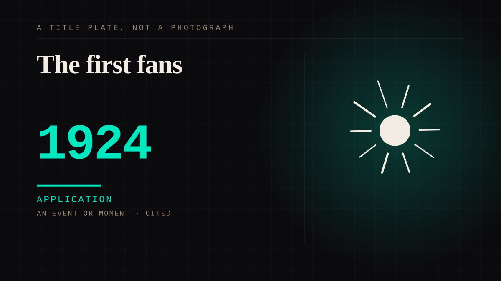

An event or moment · 1924 · First contact
The first fans
The first documented fan clubs, organised around sheet music and radio rather than film. Following became joining.

The behaviour did not arrive with any technology. It arrived with the possibility of being heard, and a great deal of organisation, done unpaid, by people who were young.
Application. One-sided attachment put to work on purpose. Creator economies, community, fandom as infrastructure, and the things that genuinely help people. Not automatically good - a tool with an obvious use is a tool that will also get a bad one.
Where it sits
1900 1900-1949 · 1924 1949
Provenance · 3 source record(s)
- retrievableVerified, not assumed: 1920-30-40 US census records were used to establish which letters in Picture Play's fan-mail pages were written by real, existing fans - so the first fandom is documented as actual people, not as a later projectionLanckman, L. (2020). Fans, community, and conflict in the pages of 'Picture Play'. Transformative Works and Culture. ↗
- retrievableTHE CONDUIT, DEFINED BY SUPPLY FAILURE. Clara Bow's fans asked her fan magazine what colour her hair and eyes were - in a black-and-white medium. The magazine supplied what the film could not. Henna sales tripled because her hair was redGordon, M. Making It in Hollywood: Clara Bow, Fandom, and Consumer Culture. ↗
- unverifiedScale of the first fandom: 45,000 fan letters a week to Clara Bow at her 1929 peak, and 500,000 circulation fan magazines at 5-25 centsGordon, M. Making It in Hollywood: Clara Bow, Fandom, and Consumer Culture, citing Stenn, Clara Bow Runnin' Wild (1988) and St. Johns, Love, Laughter, and Tears (1978).
INSTITUTION The fandom as institution
Connected · 3 out, 5 in
It sits in
The full timeline → · The database → · See it in the atlas →